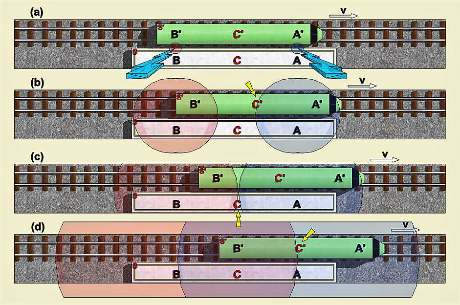

Simultaneidade
Para construção do simulador, usamos um exemplo proposto por Einstein.
Imagine que um trem está passando pela plataforma de uma estação com velocidade {V}. O referencial ligado à plataforma é chamado {S} e o referencial ligado ao trem é chamado {S'}. Dois {raios} caem deixando marcas permanentes sobre o trem e a plataforma, em {A e B} para {S}, que coincidem com {A' e B'} para {S'}. Em adição, supomos que os observadores estão localizados em {C} no meio de {A e B} e {C'} no meio de {A' e B'}, conforme a figura (a).
Para fixar as idéias, supomos que para {S}, os relâmpagos são SIMULTÂNEOS, isto é, {C} recebe, no mesmo instante, a frente de luz de {A} e aquela de {B}: conforme a figura (c).Qual é o ponto de vista do observador em {S'} Durante a viagem para a esquerda da frente de luz emitida pelo raio na frente do trem, (C') viaja para a direita. Então ele encontra esta frente primeiro: conforme a figura (b). A frente emitida pelo raio que caiu na parte de trás do trem atinge {C'} mais tarde: conforme a figura (d). Assim, para {C'}, os raios NÃO são simultâneos.
{kind=link}
Requisitos de construção do simulador:
Luz:
Possui velocidade de propagação constante e independente da velocidade dos emissores
Emissores:
Dispara o objeto luz, de forma manual pressionando o botão de disparo, ou automática quando o trem alinha com a estação. Pode ser posicionado na estação em repouso, ou em movimento acoplado ao trem;
Trem:
Possui velocidade constante, podendo ser determinada pelo usuário, com o limite máximo de igualar a velocidade da luz
Observadores:
São referenciais programados para detecção de luz (receptores)
Marcadores:
Registra o local onde a luz iniciou a propagação
Som, pausa e câmera lenta:
Auxiliares de observação do experimento pelo usuário
Observação:
Apenas os itens acima foram programados, não esta incluído inteligência artificial ou qualquer programação extra, logo qualquer resultado que aparecer é consequência de testes no experimento de simulação.
O simulador foi construído na Godot engine v3.2.1
Para exames mais profundos, veja o código fonte do projeto aqui no repositório